Four moves: fit the NB GLM, shrink dispersion, control FDR, read the enrichment.
Learning objectives
- Explain why a t-test on RNA-seq counts produces unreliable p-values, and state the two properties of the count distribution that break it.
- Write down the negative-binomial generalised linear model that DESeq2 and edgeR fit, and identify the role of the size-factor offset.
- Describe the dispersion-estimation pipeline: gene-wise MLE, fitted mean–dispersion trend, empirical-Bayes shrinkage.
- Pick the right test — Wald vs likelihood-ratio — for a given DE question.
- Explain why Benjamini–Hochberg controls FDR at 20k-gene scale, and contrast it with Bonferroni.
- Interpret a p-value histogram: what a healthy DE analysis should look like, and what the failure modes are.
- Pick between ORA and GSEA given a DE result, and describe what each actually tests.
- Sketch a DE workflow end-to-end, from the count matrix produced by Lecture 5 to an annotated gene list.
Part 1 · 25 min The DE Problem
1.1 What we're asking
"Differential expression" is the question a biologist usually wants to answer: given RNA-seq counts from samples under two or more conditions, which genes are expressed at measurably different levels between the conditions? The output is a list of genes, each with a log-fold-change estimate and a confidence statement.
Mechanically, differential expression is a gene-by-gene hypothesis test with thousands of tests run in parallel. For each gene:
- H₀: expression is the same in both conditions.
- H₁: expression differs by some non-zero amount.
The output you give a biologist is a volcano plot: log₂ fold change on the x-axis, −log₁₀ adjusted p-value on the y-axis. Genes far from the origin are "differentially expressed" (large effect, high confidence). Genes near the origin are not.
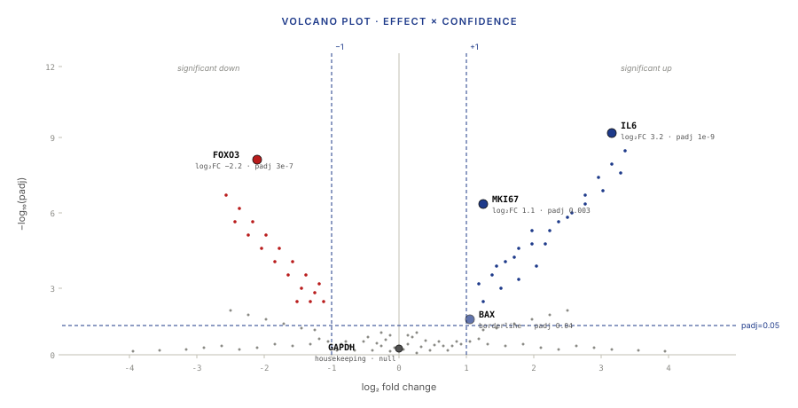
1 drawn as dashed lines; five example genes highlighted and labeled.">1.2 Why t-tests fail on counts
A reasonable first instinct: "I have counts in two conditions; run a t-test per gene." This fails for three reasons rooted in the data.
Reason 1: counts are integers, not normals. A Student's t-test assumes data are drawn from a normal distribution with a common variance parameter. Counts violate both — they're non-negative integers, they have a hard floor at zero, and their variance is a function of their mean (bigger counts mean bigger variance, §1.3). Low-count genes are the ones most affected, and low-count genes are the ones most often relevant to biology.
Reason 2: too few replicates. A typical bulk RNA-seq study has 3–6 replicates per condition. That's not enough to estimate the per-gene variance reliably with a t-test — the sample standard deviation from 3 numbers has a roughly 40% relative error. With 20,000 genes tested, thousands of them will have a spuriously small sample variance and will look "highly significant" purely by chance. A test that is correct only on average becomes spectacularly wrong when you run it 20,000 times and pick the "winners."
Reason 3: the mean–variance relationship. In real RNA-seq data, the variance of a gene's counts grows roughly quadratically with its mean (the NB model from Lecture 5 §4.4). A t-test assumes homoscedastic variance. On RNA-seq data, the t-test will underestimate variance for highly expressed genes and overestimate it for lowly expressed genes — producing p-values that are systematically wrong in opposite directions depending on gene expression level.
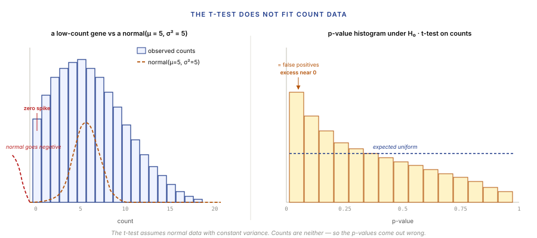
1.3 What the noise model needs to capture
The DE noise model has to represent three empirical facts:
- Discrete integer counts with a zero floor. A gene with true mean 0.3 reads per sample will have many samples with exactly 0 observed reads. A Gaussian model can't represent that.
- Variance grows with the mean. Low-count genes have variance near their mean (Poisson-like at very low counts); high-count genes have variance much larger than their mean (overdispersion).
- The overdispersion is structured. Genes of similar expression level tend to have similar overdispersion. This is the hook that lets empirical Bayes work (§3.3).
The negative binomial distribution captures all three at the cost of one extra parameter beyond the Poisson: a per-gene dispersion α that sets the quadratic-variance term. That's the model DESeq2 and edgeR fit. The rest of the lecture is how to fit it well with only a few replicates.
Part 2 · 45 min Negative Binomial and the GLM
2.1 The NB model in more depth
Lecture 5 §4.4 introduced the NB as an overdispersed Poisson — a Poisson whose rate parameter is itself drawn from a gamma distribution. Writing that out:
with mean E[Y] = μ and variance Var[Y] = μ + α·μ². The dispersion α is per-gene (not per-sample, not per-condition) because it's a property of how noisily that particular gene is expressed, and it's the thing we'll spend most of §3 estimating.
Three important special cases:
- α = 0 gives the Poisson. Observed at very low counts where there isn't much to be overdispersed about.
- Small α (~0.01) gives near-Poisson behaviour. Typical for highly-expressed housekeeping genes with tight biological control.
- Large α (~0.3) gives heavy overdispersion. Typical for genes with bursty expression or strong biological variability.
A typical RNA-seq dataset has dispersions spanning two orders of magnitude across the 20,000 genes. The mean-dispersion relationship follows a predictable pattern: low-mean genes have high dispersion (the α·μ² term is small but Poisson-like floor dominates the noise), medium-mean genes have moderate dispersion, high-mean genes have low dispersion (tight biological control on the highly-expressed genes).
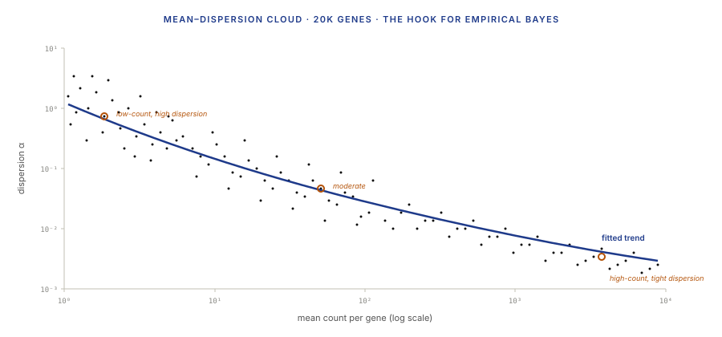
2.2 The NB generalised linear model
DESeq2 and edgeR fit a generalised linear model (GLM) per gene. The canonical form, for gene g and sample i:
where:
- μig is the expected count for gene g in sample i.
- si is the size factor for sample i (from DESeq2's median-of-ratios, Lecture 5 §4.3).
- xi is the condition indicator (0 for control, 1 for treatment).
- β0,g is the gene's baseline log-expression.
- β1,g is the log-fold-change for gene g between conditions — the thing we want to test against zero.
More generally, xi can be a full design matrix with multiple coefficients (batch, sex, condition, treatment × time interactions, etc.). The GLM machinery is exactly the same as in linear regression, but with the log-link function and the NB likelihood.
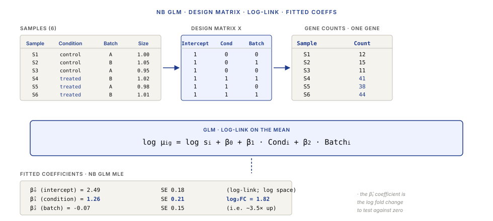
The practical consequence: once the GLM is fit, every DE question becomes "is some linear combination of β coefficients significantly different from zero?" — which is just a standard hypothesis test.
2.3 Size factors and log-fold change
The size factor si in the GLM is an offset, not a coefficient. We treat it as known (it was estimated from the full count matrix in Lecture 5 §4.3). In log space:
the log si term shifts the prediction up for samples with deeper libraries and down for samples with shallower ones, leaving the β coefficients to carry the composition-normalised expression change. Without the offset, β₁ would conflate "more reads in this sample" with "more expression of this gene" — exactly the composition confounding that §4.3 of Lecture 5 was designed to remove.
The coefficient β1,g, after the offset has absorbed depth, is the log-fold change between conditions:
converting to log₂ base (the biologist's convention) by dividing by log(2): log2FC = β₁ / log(2).
2.4 Biological versus technical variance
Overdispersion in RNA-seq is not a single thing. It has two sources, and distinguishing them matters for experimental design.
Technical variance comes from the library-prep and sequencing pipeline: pipetting error, polyadenylation bias, fragmentation noise, PCR duplicates that weren't marked, sequencer calibration drift. This is the component that shrinks with more reads per sample (higher depth).
Biological variance comes from real expression differences between replicate samples — in animal experiments, slight differences in genetic background, circadian phase, cage environment. Even in "identical" cell-line samples, there's cell-cycle phase heterogeneity and clone-to-clone drift. This is the component that shrinks only with more biological replicates, never with more reads.
In practice, biological variance dominates for medium-to-highly-expressed genes, and technical variance dominates for low-count genes. The consequence for experiment design: if your effect is large and your genes are highly expressed, 3 replicates suffice; if your effect is small or you care about low-count genes (transcription factors, regulators), you need 6+ replicates. More reads per sample doesn't fix the problem.
Part 3 · 60 min DESeq2 and edgeR Mechanics
3.1 The DE pipeline, end to end
Both DESeq2 and edgeR follow the same conceptual flow, differing mostly in the details of dispersion estimation:
count matrix (from L5)
↓
estimate size factors (median of ratios, L5 §4.3)
↓
estimate gene-wise dispersion (§3.2, MLE)
↓
fit a mean–dispersion trend (§3.3)
↓
shrink dispersions toward the trend (empirical Bayes)
↓
fit NB GLM per gene with shrunk α (§2.2)
↓
test β coefficients (Wald or LRT, §3.4)
↓
raw p-values (one per gene)
↓
multiple-testing adjustment (BH, §4)
↓
filtered / annotated gene list (§5)
Every substantive disagreement between DESeq2 and edgeR is about how steps 3–5 are done. The rest is bookkeeping.
3.2 Per-gene dispersion estimation
Given the counts for gene g across n samples and the fitted intercept β0,g, the per-gene maximum-likelihood estimate of αg is the value that makes the observed counts most probable under the NB model. Computed by a couple of iterations of Newton-Raphson on the NB log-likelihood; in code, DESeq2 uses nbinomDispEstimate, edgeR uses estimateGLMCommonDisp.
At n = 3–6 samples per condition, this estimator is essentially garbage. A single-gene dispersion MLE with 3–6 observations has a confidence interval that spans more than two orders of magnitude. That's why the next step is critical.
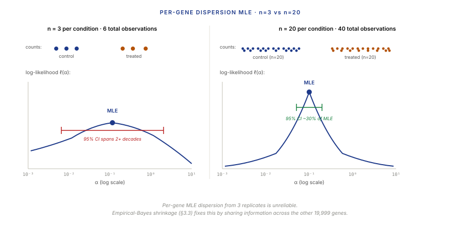
Two details that matter:
- Pooling across conditions matters: for dispersion, we pool residuals from all samples of a gene (not just one condition), because we assume the dispersion is the same in both conditions. Only the mean differs.
- Outliers bite hard: a single aberrant count in a gene with 3 replicates per condition will inflate the gene-wise MLE by an order of magnitude. DESeq2 replaces such outliers with an imputed count using Cook's distance.
3.3 Empirical-Bayes shrinkage toward the fitted trend
Here is the central statistical idea of DESeq2 and edgeR, and the reason they work on 3-replicate studies.
The empirical observation: if you plot per-gene mean against per-gene (raw, MLE) dispersion for all 20,000 genes in a dataset, the points form a clear downward-sloping cloud. Low-expression genes have high dispersion on average; high-expression genes have low dispersion on average. This trend is real and it's consistent across datasets.
The algorithmic move: fit a parametric trend through the cloud (DESeq2 uses a regression of the form dispersion = α₀ + α₁/mean; edgeR uses a cubic-smoothing-spline variant). Then, for each gene, "shrink" its raw MLE toward the trend line. Genes that disagree strongly with the trend (real outliers) are shrunk less; genes close to the trend are shrunk more. The result is a per-gene dispersion estimate that is informed by both its own data and the global trend — an empirical-Bayes estimator.
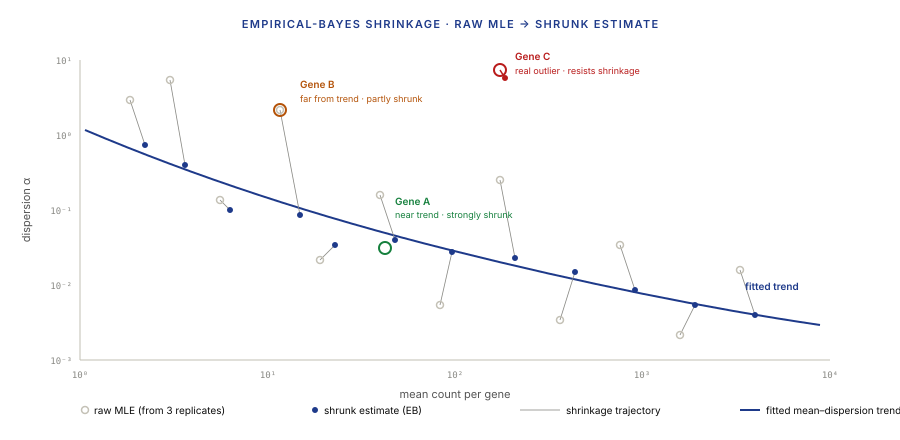
The statistical payoff: the shrunk estimator has much smaller variance than the raw MLE for genes near the trend, at the cost of a small bias toward the trend for genes that are genuinely atypical. In large-scale testing that tradeoff is strongly favourable — the variance reduction buys calibrated p-values, the small bias doesn't qualitatively change which genes are significant.
3.4 Hypothesis tests — Wald and LRT
With the GLM fit (β̂1,g) and its standard error (SE(β̂1,g)) in hand, the DE test for gene g against the null H₀: β1,g = 0 has two canonical forms.
Wald test. Compute the z-statistic and its p-value:
Simple, fast, asymptotically valid. Works well for single-coefficient tests (two-condition comparisons). The default in DESeq2.
Likelihood-ratio test (LRT). Fit the full model (with β1,g) and the reduced model (without β1,g). Compute:
where ℓ is the log-likelihood. The LRT is more robust for complex hypotheses — testing multiple coefficients jointly (a condition × time interaction, a factor with three levels), and for small-sample cases where the Wald approximation can be off. Used in DESeq2 with test="LRT" and in edgeR's glmQLFTest.
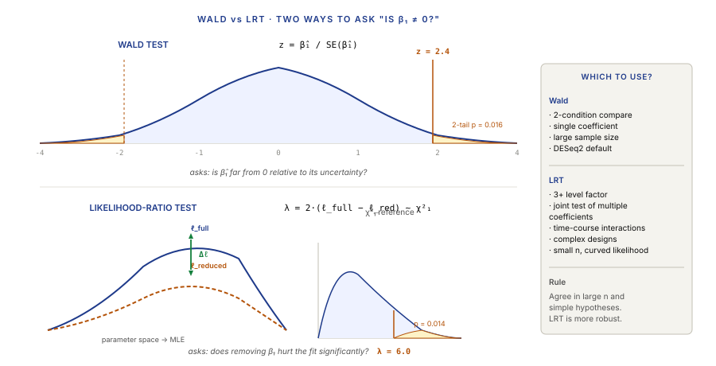
3.5 limma-voom: the variance-stabilising alternative
limma-voom (Law, Chen, Shi, Smyth 2014) is a different approach that ends at the same place: a per-gene p-value and log-fold change.
The core idea: transform the count data so it looks Gaussian-enough for standard limma linear models to work. The transformation has two steps:
- Log-CPM the counts (Lecture 5 §4.2). Now the values are on an approximately additive scale.
- Voom weighting — compute a precision weight per (sample, gene) cell, estimated from the empirical mean–variance relationship. Small counts get small weights; high counts get large weights. Feed weighted log-CPMs into limma's standard linear-model + empirical-Bayes testing framework.
The output: linear-model β coefficients, moderated t-statistics, and p-values — all the machinery of classical microarray analysis, applied to transformed RNA-seq counts. Benchmarks consistently show limma-voom is competitive with DESeq2 and edgeR on most datasets; it's especially fast on large cohorts (thousands of samples) where the GLM-based tools slow down.
Pragmatic rule for 2024: for small experiments (n ≤ 20 per condition), DESeq2 is the default. For large cohorts (n ≥ 50 per condition) or genome-scale studies (GWAS-like designs on expression), limma-voom scales better and gives equivalent answers.
Part 4 · 40 min Multiple Testing at Gene Scale
4.1 The problem at 20,000 tests
A standard DESeq2 run tests around 20,000 genes in parallel. Even if every gene were truly null (no differential expression at all), an α = 0.05 per-test threshold would produce 20,000 × 0.05 = 1,000 "significant" genes purely by chance. No biologist will believe that any single raw p-value < 0.05 result means anything in this regime — and rightly so.
A useful way to visualise what's going on: the p-value histogram. Under the null hypothesis, p-values are uniformly distributed on [0, 1]. In a real DE analysis most genes are null, but some fraction has real effects. The histogram should look like: a flat uniform region (the nulls), with a spike near zero (the real effects). If the histogram has a spike near 1 (U-shape) or a systematic slope, the p-values are miscalibrated — a sign of model misspecification.
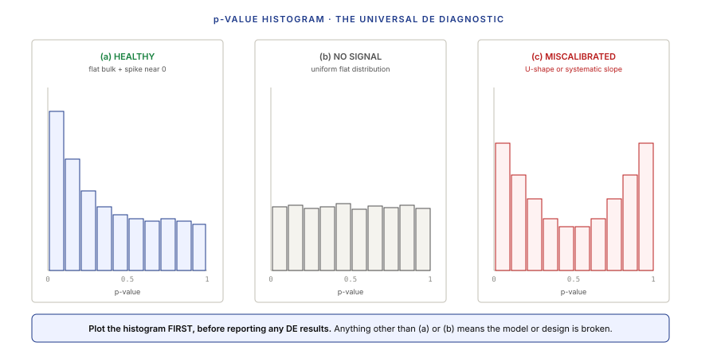
4.2 Bonferroni vs Benjamini–Hochberg
Two canonical ways to control false positives when running many tests.
Bonferroni controls the family-wise error rate (FWER): the probability of making any false discovery at all. With m tests at per-test level α, Bonferroni rejects only those with p ≤ α/m. For 20,000 genes at α = 0.05 Bonferroni, the per-gene threshold is 2.5 × 10⁻⁶. Highly conservative — you'll get a handful of very-strong hits and miss most real effects.
Benjamini–Hochberg (BH) controls the false-discovery rate (FDR): the expected fraction of false discoveries among those rejected. Sort p-values ascending, p(1) ≤ p(2) ≤ … ≤ p(m). Find the largest k such that p₍ₖ₎ ≤ (k/m)·α. Reject the k hypotheses corresponding to the smallest k p-values.
BH's interpretation: "of the ~500 genes on my gene list, I'm willing to accept that up to 5% are false positives in exchange for not missing the 95%." That's an acceptable trade for biological follow-up where wet-lab validation will filter false hits.
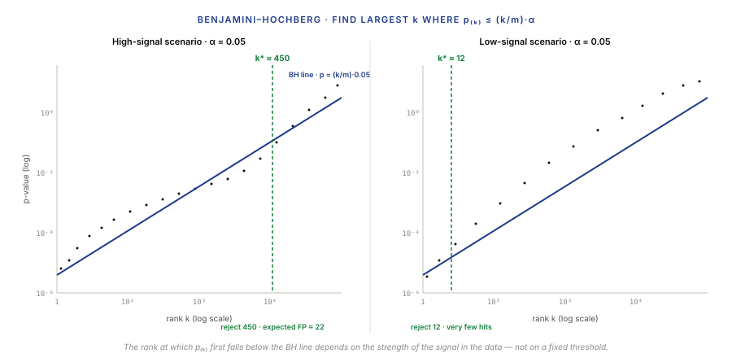
4.3 FDR interpretation and q-values
A single number from a DE tool's output matters: padj (DESeq2) or FDR (edgeR) — the BH-adjusted p-value. It has a specific meaning:
If you reject all genes with padj ≤ q, then (in expectation) q · (number of rejections) of them are false positives.
So at padj ≤ 0.05, if the gene list has 500 entries, ~25 are expected false positives.
The q-value (Storey 2003) is a refinement: it estimates the proportion of null hypotheses π₀ directly from the p-value distribution (the uniform-like "flat" region), which lets it give a slightly less conservative estimate than BH. For most RNA-seq DE work the BH/padj number and the Storey q-value agree to within a few percent; the distinction matters more in dense-signal regimes than typical bulk RNA-seq.
Practical rule: report padj (BH) everywhere. Report q-value in addition if you're doing methodological benchmarking. Don't report raw p-values without an FDR-adjusted companion — raw p-values at large m are meaningless without the adjustment.
4.4 Independent filtering and weighted FDR
One last refinement that DESeq2 applies by default: independent filtering.
The idea: genes with extremely low total counts have zero chance of being significant even if their effect is large — the variance is so high that no test can discriminate the effect from noise. Including them in the multiple-testing adjustment wastes power. So DESeq2 filters them out before running BH, using a data-dependent threshold that maximises the number of rejections.
The filter criterion must be independent of the test statistic under the null, to avoid biasing p-values. Mean count (or more robust variants) satisfies this.
The result: the effective m for BH is smaller — sometimes by 30–50%. The BH threshold is less conservative. More true positives survive.
More sophisticated approaches (Independent Hypothesis Weighting, IHW; Ignatiadis et al. 2016) generalise this: weight each p-value by an independently-estimated signal covariate (such as gene length or mean expression). Used sparingly in RNA-seq; common in large-cohort studies where the extra power matters.
Part 5 · 30 min From Gene List to Biology
5.1 Over-representation analysis (ORA)
A DE analysis produces a list of "significant" genes. That list is rarely meaningful on its own — a biologist wants to know which pathways or processes those genes point to. The simplest approach: over-representation analysis (ORA).
Given a curated gene set (say "G2/M cell-cycle genes", 127 genes annotated from MSigDB), and your list of DE genes (say 500 genes), ask: "Is the overlap between these two sets larger than expected by chance?"
Mechanically, this is a 2×2 contingency test:
| in gene set | not in gene set | total | |
|---|---|---|---|
| DE gene | 42 | 458 | 500 |
| not DE | 85 | 19,415 | 19,500 |
| total | 127 | 19,873 | 20,000 |
Fisher's exact test (or the asymptotic chi-square equivalent) gives a p-value for over-representation. Do this for thousands of gene sets (all of MSigDB, all GO terms), apply BH correction to the resulting p-values, and report the ones with significant enrichment.
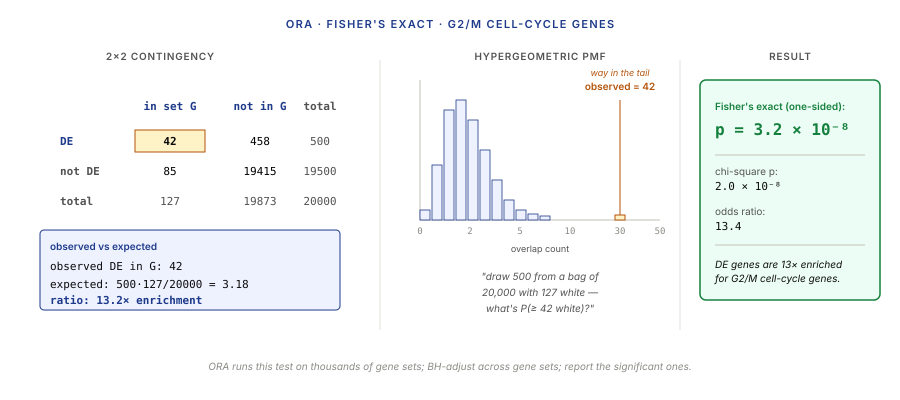
ORA is cheap and intuitive. It has two big drawbacks: (1) it requires a hard threshold for "DE" (loses information from sub-threshold genes), (2) it treats all genes above threshold as equivalent (a gene with log₂FC = 6 counts the same as one with log₂FC = 0.6).
5.2 Gene-set enrichment analysis (GSEA)
GSEA (Subramanian et al. 2005) solves both ORA problems by using the full ranked gene list, not a thresholded subset.
Algorithm sketch:
- Rank all 20,000 genes by some continuous DE statistic (signed log₂FC / -log₁₀p, or a signed Wald z-score).
- For each gene set S of interest, walk down the ranked list computing a running-sum statistic: +1 weight when you hit a gene in S, −1 weight when you don't (normalised by set size). The running sum goes up when you're enriched for set genes, down when you're not.
- The enrichment score (ES) is the maximum deviation from zero along the walk.
- Estimate statistical significance by permutation — shuffle gene labels, recompute ES many times, build the null distribution.
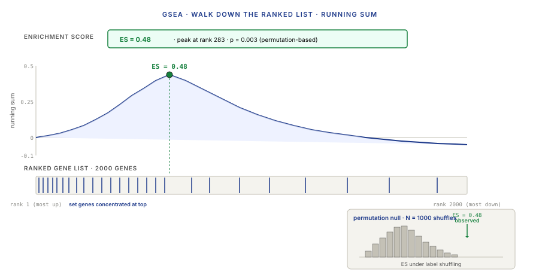
5.3 Pathway databases and interpretation caveats
The quality of any enrichment analysis is bounded by the quality of the gene sets it runs against. Major sources:
- MSigDB (Molecular Signatures Database, Broad Institute). The single most widely used collection. Hallmark gene sets (H), curated gene sets (C1–C7), motif-based (C3), cancer-focused (C6), immune-focused (C7). ~25,000 gene sets total.
- GO (Gene Ontology). A controlled vocabulary of biological processes, molecular functions, and cellular components, each with its associated gene set. Universal; hierarchical (e.g. "immune response" has many child categories).
- KEGG (Kyoto Encyclopedia of Genes and Genomes). Manually curated metabolic and signaling pathways, each with a gene list. Smaller but higher-quality than GO.
- Reactome. Human-curated pathways, more detailed biochemistry than KEGG. Popular in European labs.
- WikiPathways. Community-curated pathways, edited like Wikipedia.
Pragmatic rules:
- Start with MSigDB Hallmarks (50 high-level gene sets) for a quick overview.
- Use the larger C2 / C7 collections for specific biological questions.
- Always report which database version you used — they update annually, and results shift.
- Be wary of hits with fewer than 5 genes overlapping — even if significant, the biology is thin.
Wrap-up · 10 min Takeaways, homework, and next lecture
What you should take away
- DE is gene-by-gene hypothesis testing at 20,000-test scale with few replicates. Every step of the pipeline exists because naive approaches (t-test per gene, Bonferroni correction, no dispersion sharing) fail at this scale.
- The negative-binomial GLM is the backbone. DESeq2 and edgeR differ in implementation details but fit the same model: log μ = offset + β·x, with NB likelihood and gene-specific dispersion α.
- Empirical-Bayes shrinkage of dispersion is why DE works on 3 replicates. Sharing information across genes via the mean-dispersion trend turns a noisy per-gene estimate into a calibrated one. Without this shrinkage, the analysis is uncalibrated.
- FDR via Benjamini–Hochberg is the right multiple-testing framework. Bonferroni is too conservative; FDR gives you a list with a controlled fraction of false positives, which is what biological follow-up needs.
- The p-value histogram is the universal diagnostic. Flat bulk with near-zero spike = healthy. Any other shape = something is wrong with your model or design.
- Interpretation requires gene sets, not individual genes. A list of 500 DE genes tells you almost nothing; an ORA or GSEA run against MSigDB tells you which molecular programs are shifting. Use the enrichment layer as the reporting unit, not the individual-gene layer.
Next lecture
Single-cell RNA-seq fundamentals: droplet protocols, UMIs, the transition from bulk to per-cell resolution, dimensionality reduction with PCA and UMAP, clustering and cell-type annotation.
Homework
- Download a published bulk RNA-seq dataset with at least 3 replicates per condition (GEO accession GSE52778 works — airway smooth muscle treated with dexamethasone, 4 vs 4). Run DESeq2 end-to-end. Report: number of DE genes at padj < 0.05, distribution of log₂FC values, and a screenshot of the p-value histogram.
- Take the DE result from problem 1. Plot the volcano. What fraction of DE genes has |log₂FC| > 1? Do those genes have smaller or larger raw p-values on average than the rest of the DE set?
- Implement the BH procedure by hand on a sorted p-value list from your DESeq2 output. Verify your hand-computed padj matches DESeq2's output. At what rank does the BH line touch the sorted p-values for FDR = 0.05?
- Run GSEA against MSigDB Hallmarks on the DE result. Report the top 5 hallmark gene sets by enrichment score. Compare ORA (Fisher's exact on DE-genes-only) against GSEA (running-sum on the full ranked list). Which method identifies more hits? Are they the same hits?
- Analyse a simulated dataset where you know the ground truth. Use the FDR Simulator artifact with 20,000 genes, 500 true positives, modest effect size, and 3 replicates. At FDR = 0.05, what fraction of rejected genes are true positives (precision)? What fraction of true positives are rejected (power)? How does this compare to Bonferroni at α = 0.05?
Recommended reading
- Love, M. I., Huber, W., & Anders, S. (2014). Moderated estimation of fold change and dispersion for RNA-seq data with DESeq2. Genome Biology 15, 550.
- Robinson, M. D., McCarthy, D. J., & Smyth, G. K. (2010). edgeR: a Bioconductor package for differential expression analysis of digital gene expression data. Bioinformatics 26, 139–140.
- Law, C. W., Chen, Y., Shi, W., & Smyth, G. K. (2014). voom: Precision weights unlock linear model analysis tools for RNA-seq read counts. Genome Biology 15, R29.
- Benjamini, Y., & Hochberg, Y. (1995). Controlling the false discovery rate: a practical and powerful approach to multiple testing. JRSS Series B 57, 289–300.
- Subramanian, A., Tamayo, P., Mootha, V. K., et al. (2005). Gene set enrichment analysis: a knowledge-based approach for interpreting genome-wide expression profiles. PNAS 102, 15545–15550.
- Liberzon, A., Birger, C., Thorvaldsdóttir, H., et al. (2015). The Molecular Signatures Database (MSigDB) Hallmark gene set collection. Cell Systems 1, 417–425.
- DESeq2 vignette: bioconductor.org
Appendix — timing summary
| Block | Time | Cumulative |
|---|---|---|
| Part 1 — The DE Problem | 25 min | 0:25 |
| Part 2 — Negative Binomial and the GLM | 45 min | 1:10 |
| Part 3 — DESeq2 and edgeR Mechanics | 60 min | 2:10 |
| Part 4 — Multiple Testing at Gene Scale | 40 min | 2:50 |
| Part 5 — From Gene List to Biology | 30 min | 3:20 |
| Wrap-up | 10 min | 3:30 |
Total: ~3h 30min of content.